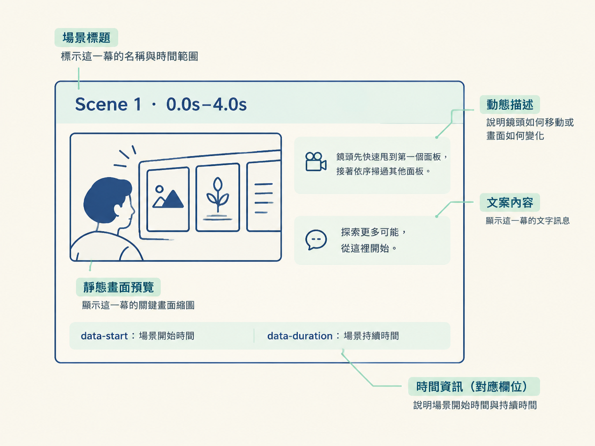

一頁 HTML 分鏡是把整支影片的計畫集中在單一網頁中的審查頁，包含影片描述、場景數、總時長、逐場景秒數拆解、每幕靜態畫面、文案預覽、開始時間與動態描述。
分鏡頁用來呈現影片在製作前的畫面、文字與時間安排。它不是影片本身，只是讓人先檢查構圖、版面、元素位置、文案與節奏的靜態預覽。
常見格式是一頁 HTML 網頁，也稱為 storyboard 頁。HTML 頁面可以直接在瀏覽器開啟、重新整理與點擊，內容也能快速修改或重新產生。
完整的分鏡頁通常包含下列欄位。不同工具的版面可能不同，但欄位內容可依此表查閱。
| 欄位 | 內容 | 用途 |
|---|---|---|
| 影片描述 | 影片整體主題與目標觀眾 | 確認影片方向 |
| 場景數 | 影片分成的場景總數 | 確認整體結構與份量 |
| 總時長 | 整支影片的秒數 | 確認影片長度 |
| 逐場景秒數拆解 | 每個場景所佔的秒數，合計為總時長 | 確認節奏與各段長度 |
| 每幕靜態畫面 | 場景的最終外觀，不含動畫 | 查看構圖、版面與元素位置 |
| 文案預覽 | 場景中會出現的文字內容 | 檢查措辭、字體與字級 |
| 開始時間 | 場景開始的時間點 | 確認時間軸與場景順序 |
| 動態描述 | 場景中的動作，例如鏡頭移動方式 | 查看動態意圖 |
「逐場景秒數拆解」將影片總時長分配到各個場景。例如影片總長為 12 秒，表格會列出每一幕各佔幾秒，而不是只標示總秒數。
場景的開始時間與持續時間可用來表示時間順序與長度比例。若開場佔 8 秒、結尾只剩 1 秒，這類分配會直接反映在拆解表或按比例繪製的時間軸上。
動態描述記錄靜態畫面之外的動作內容。例如：「鏡頭甩到第一個面板，然後繼續掃過其他面板。」這類描述用來表示鏡頭或畫面接下來的移動方式；「動畫效果」不是完整的動態描述。
下列骨架將時間、標題、靜態畫面、動態描述與文案放在同一張場景卡片中：
<section class="scene" data-start="0" data-duration="4">
<h3>Scene 1 · 0.0s–4.0s</h3>
<div class="preview"><!-- 這一幕的最終外觀截圖 --></div>
<p class="motion">鏡頭甩到第一個面板，接著掃過其他面板</p>
<p class="copy">這裡放這一幕會出現的文案</p>
</section>data-start 表示場景開始時間，data-duration 表示場景持續時間。各場景區塊依序排列時，整頁由上到下對應影片的時間順序。

hyperframes-helper 這類工具組通常附有分鏡樣板。這個樣板包含五張場景卡片；每張卡片是縮小至約一半大小的 1920×1080 版面預覽，旁邊配置一塊動態備註面板。
樣板的 HTML 修改一版約需一分鐘；正式剪輯介面修改一版可能需十幾分鐘。樣板提供固定的版面與欄位，場景內容仍需依影片實際內容填寫。
一頁 HTML 分鏡是影片計畫的審查頁，包含影片描述、場景數、總時長、逐場景秒數拆解、每幕靜態畫面、文案預覽、開始時間與動態描述。它呈現影片開始製作前的構圖、文字與節奏；工具附的樣板可以當作版面起點，欄位內容則依影片場景填寫。